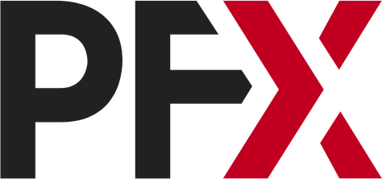

PFX gives independent operators, regional chains, and franchisors a white-label pizza vending platform, your recipes, your brand, your pricing, 24/7.
Unlike franchise programs, you own the equipment and keep full control. We’re built for Independent Operators, Regional Chains, Franchisors, and even Convenience Stores.
Explore SpecsNAMA & UL Certified, Built to Last
Full Custom Wrap With Your Colors, Logo, and Messaging.
Buy the Equipment, Keep the Profits.
Your Pizzas are Tested to Ensure Perfect Baking And Customer Satisfaction.
Your Dough, Sauce, Cheese, Toppings, Completely Made By You.
Set Prices, Run Seasonal Specials, Update Remotely.
You Prep, Stock, And Manage On Your Schedule, No Third Party Involvement.
Your Ingredients, Your Standards.
PFX is a white-label pizza vending platform — automated kiosks that let operators, regional chains, and franchisors sell their own recipes under their own brand, 24/7, without the overhead of a traditional storefront.
Fresh pizzas are prepped and loaded into the kiosk, which stores, bakes, and dispenses each order on demand through a self-serve touchscreen and payment terminal — typically ready in under 5 minutes.
Because you supply your own dough, sauce, cheese, and toppings, every pizza reflects your own recipes and standards. Each kiosk is also temperature- and freshness-monitored to keep ingredients within safe, high-quality ranges.
Operators handle routine daily cleaning and restocking, while PFX backs every kiosk with a 1-year parts & labor warranty, remote monitoring, and a 24/7 technical support helpline.
Pizzas never come into contact with the inside of the machine during loading, baking, or serving—they’re baked directly in the box they arrive in. Our units are NAMA approved for sanitary food vending, and both the interior and exterior of every PizzaForno machine are cleaned regularly.
Once a pizza is inserted into the machine, an automated system tracks the ‘best before’ dates of all pizzas to ensure food quality and safety. Using a first-in, first-out approach, it prioritizes freshness and automatically removes any pizzas past their shelf life from the available inventory, ensuring customers receive only fresh products.
Returns vary by location, foot traffic, and pricing — use our ROI Calculator to model projected earnings, payback period, and lifetime ROI for your specific setup.
PFX is the white-label automation platform and hardware, powered by PizzaForno's technology. PizzaForno is the original consumer-facing brand; PFX lets you run the same technology entirely under your own brand.